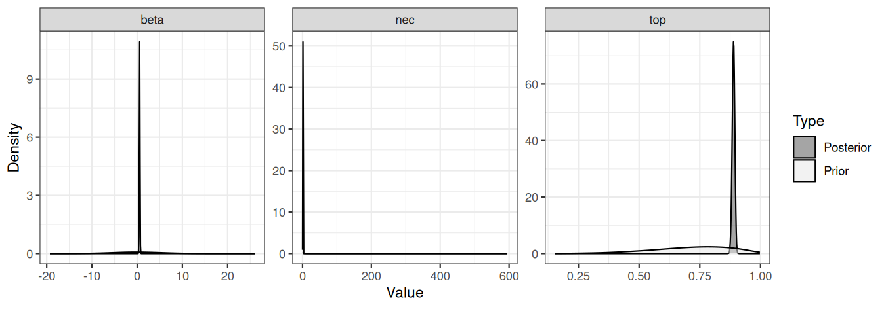
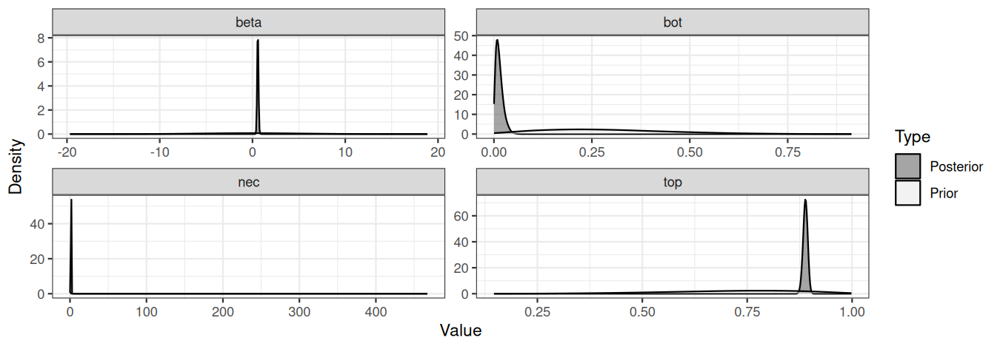
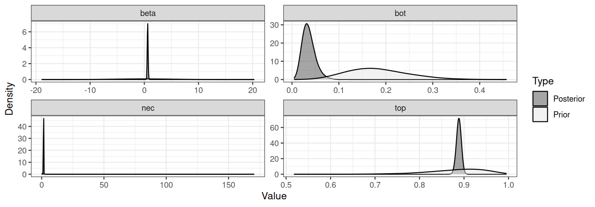
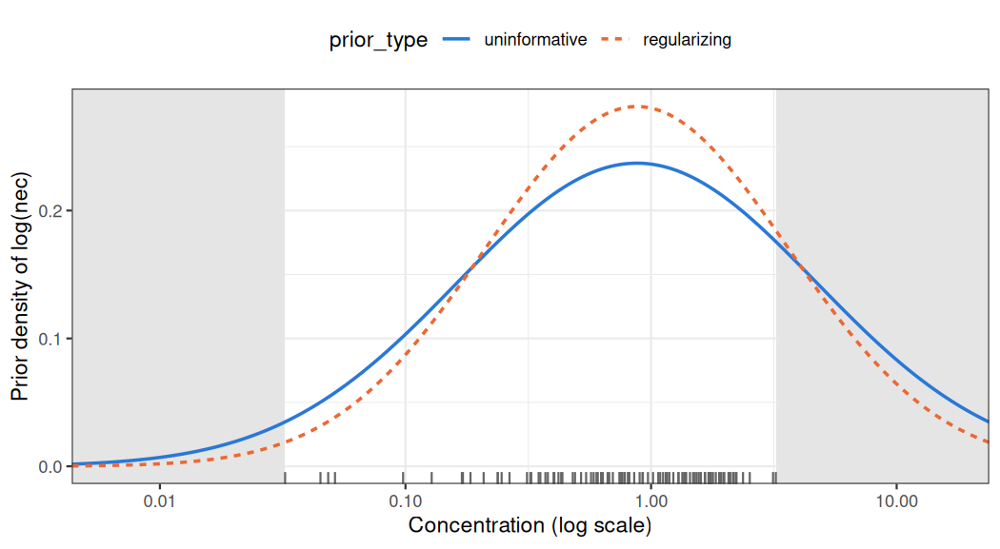
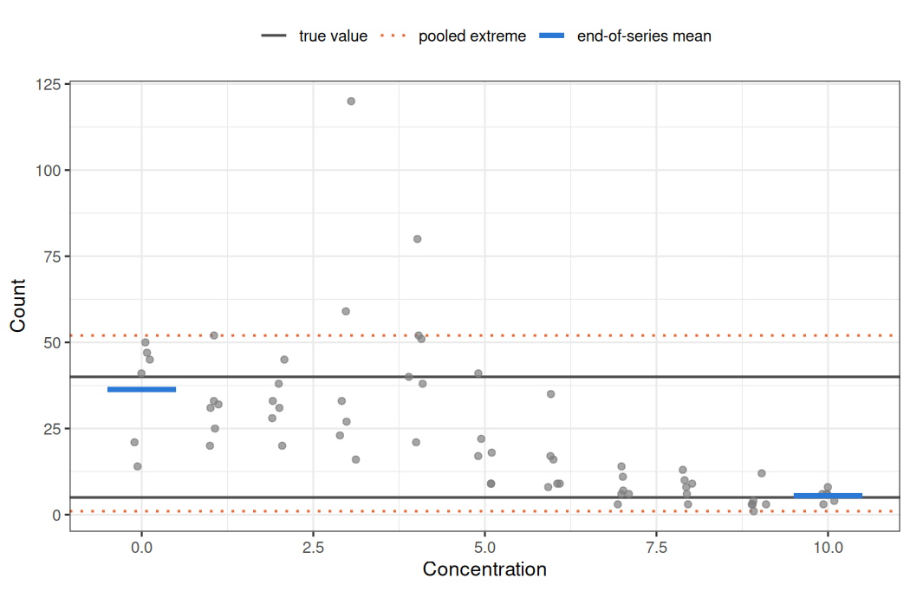
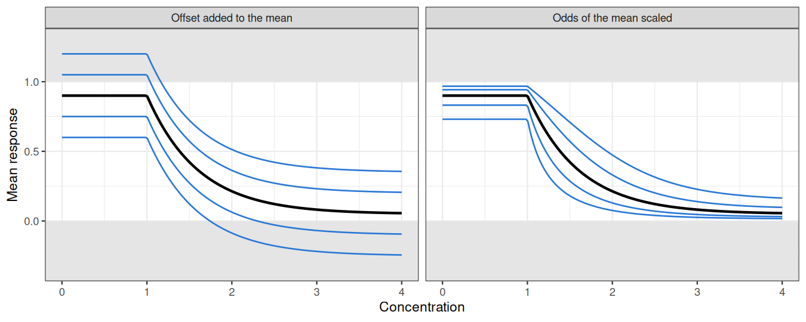

Each parameter of a bayesnec model needs a prior, and
which parameters a model has depends on which of the 24 equations is
fitted. bnec() therefore builds a default prior for each
parameter of each equation it fits, based on the response, the
predictor, the family and its link. These defaults are intended to be
weakly informative (i.e. broad enough that the data determine the
posterior, while keeping each parameter within the region in which its
equation is defined). Two default sets are available through the
prior_type argument: the "uninformative" set
described by Fisher et al. (2024), which is used unless another is
requested, and a narrower "regularizing" set.
Below we first show how to inspect the priors of a fit, and then
summarise the default priors and the choice between the two sets. We
then show how to specify priors of your own for objects of class
bayesnecfit and bayesmanecfit, how to fix a
parameter at a known value, and how priors are set for group-level
terms. The final section, Technical
detail, gives the rules from which each default prior is built,
together with the checks we ran on them, for readers who need that level
of detail.
Before deciding whether the default priors suit a dataset, it is
useful to see what they are and how much they influence the posterior.
Here we fit nec3param to the nec_data
example (a Beta-distributed response on the "identity"
link) without specifying the brm argument
prior, so that bnec() builds all of the priors
itself.
library(brms)
library(bayesnec)
data(nec_data)
# a single model
set.seed(333)
exmp_a <- bnec(y ~ crf(x, model = "nec3param"), data = nec_data,
family = Beta(link = "identity"),
iter = 1e4, control = list(adapt_delta = 0.99))A fit of a single equation returns an object of class
bayesnecfit, whereas a fit of more than one equation
returns an object of class bayesmanecfit (both are used in
User-specified priors below).
class(exmp_a)
#> [1] "bayesnecfit" "bnecfit"The function pull_prior() returns the priors used in a
fit.
pull_prior(exmp_a)
#> [[1]]
#> prior class coef group resp dpar nlpar lb
#> normal(0, 5) b beta
#> normal(0, 5) b Intercept beta
#> lognormal(-0.132723577442522, 1.68292842267636) b nec 0.03234801324009
#> lognormal(-0.132723577442522, 1.68292842267636) b Intercept nec 0.03234801324009
#> beta(5, 2) b top 0
#> beta(5, 2) b Intercept top 0
#> gamma(0.01, 0.01) phi 0
#> ub tag source
#> user
#> (vectorized)
#> 3.22051966293556 user
#> 3.22051966293556 (vectorized)
#> 1 user
#> 1 (vectorized)
#> defaultThe nec prior is a lognormal bounded to
the tested range of nec_data$x (0.032 to
3.22), the top prior is
beta(5, 2) bounded to 0 to 1, and
beta has a normal(0, 5) prior. The prior
on phi (the precision of the Beta distribution) has the
source default because it is the brms default,
and is not set by bayesnec.
We can also use the function check_priors() (based on
the hypothesis() function of brms) to assess
how the posterior probability density for each parameter differs from
that of the prior. This can be useful to assess whether the priors are
suitably vague, and whether they might be having an undesirable
influence on the posterior.
check_priors(exmp_a)
Prior and posterior densities of the three parameters of nec3param fitted to nec_data under the default priors.
For all three parameters the posterior is far narrower than the
prior, and the prior density is close to flat across the width of the
posterior (which is near 1.55 for nec,
0.89 for top and 0.6 for
beta). In this case the priors therefore appear to have
little influence on the posterior.
The function get_priors() returns the priors
bnec() would build for a formula and dataset without
fitting anything, so that they can be inspected, or edited, before the
first fit (see Fixing a parameter).
Samples from a set of priors can be drawn and plotted with
sample_priors().
The default priors are built separately for three groups of parameters, according to the scale each parameter is on. The parameters top and bot scale with the response, nec and ec50 scale with the predictor, and beta, slope, d and f are written in each equation on a scale on which they can take any value. The prior on top and bot also depends on the family and its link, the prior on nec and ec50 depends on the scale on which the predictor is supplied, and both depend on which of the two default sets is selected (see the table below).
| Parameters | Families | "uninformative" |
"regularizing" |
|---|---|---|---|
| top, bot |
gaussian, and any family on a
log or logit link |
normal, with its mean at the
90th (top) or 10th
(bot) percentile of the response and a standard
deviation of 2.5 times that of the response |
normal, with its maximum density at the
mean response over the lowest (top) or highest
(bot) concentrations and a standard deviation of 0.4
times the "uninformative" one |
| top, bot |
poisson, negbinomial,
Gamma
|
gamma with a shape of 2, with its mean at
the 75th (top) or 25th
(bot) percentile of the response |
gamma, located and scaled as for
normal
|
| top, bot |
binomial, beta,
beta_binomial
|
beta(5, 2) (top) and
beta(2, 5) (bot) |
beta, located and scaled as for
normal
|
| nec, ec50 | predictor on the concentration scale |
lognormal, centred on the median of the
distinct logged concentrations, with a central 95% that includes every
concentration tested, truncated to the tested range |
as for "uninformative", with a central
98% |
| nec, ec50 | predictor already logged |
normal, with its mean at the median of the
distinct predictor values and a standard deviation of 10 times their
standard deviation, truncated to the tested range |
normal, with a central 98% that includes
every value tested, truncated to the tested range |
| beta, slope | all | normal(0, 5) |
normal(0, 5) |
| d, f | all | normal(0, 5) |
normal(0, 1) |
| group-level standard deviations | all | student_t(3, 0, s) |
student_t(3, 0, 0.4 s) |
The parameters nec and ec50 are
estimated in units of concentration, and the prior on each is a
normal distribution on the logarithm of the
predictor, which is the scale on which a dilution series is designed.
Where the predictor is supplied on the concentration scale the prior is
written as a lognormal, whereas a predictor that spans
negative values is treated as having already been log transformed by the
user, and the prior is written as a normal. These two
routes (concentration-scale and logged) apply one rule, written on two
scales. The choice between them is made from the sign of the predictor
under the default predictor_scale = "auto", and the user
can instead declare the scale with
predictor_scale = "concentration" or
predictor_scale = "log" (see ?bnec). The
declaration is needed for a logged series whose lowest concentration was
at or above 1, because the logged values are then all non-negative, and
under "auto" they would be logged a second time.
On the concentration-scale route, the width of the
nec and ec50 prior is set by the
concentrations at each end of the tested series, and not by the spread
of the series between them, so it is sensitive to how a control is
recorded. The prior is built from the concentrations as recorded, so a
control entered as a nominal small positive value is treated as a
concentration that was applied, and the prior widens to include it. For
example, on the nassarius contaminant A series the standard
deviation is 2.30 with the control recorded as
0, 2.59 with it recorded as 0.001
and 6.11 with it recorded as 1e-6. We
therefore recommend recording a control as 0.
Both entries are bounded to the tested range of the predictor (from
its lowest value to its highest, on the scale on which the predictor is
supplied). This bound reflects the assumption on which both default
prior sets are built, i.e. that the concentrations tested reached the
lower asymptote of the response, so that the decline begins, and passes
its midpoint, within that range. Where this assumption fails, the upper
bound is not conservative. A threshold above the highest concentration
tested is then outside the support of the prior, not in its tail, so the
posterior can place no mass there and instead concentrates against the
bound. In this case nec() returns the highest concentration
tested with a narrow credible interval around it, which appears to be a
precise estimate of something the experiment did not measure.
Before fitting anything, bnec() gives a message where
the response is still declining at the top of the series, and the user
can declare such a design with asymptote_observed = FALSE.
Under this declaration the upper bound on nec and
ec50 is removed and the lower bound is kept. The
bot prior of either set is also replaced by one whose
central 95% spans from the floor of the response (zero for every family
except gaussian, and for a gaussian response
that is never negative) to the mean response at the highest
concentrations, so that this mean is read as an upper bound on
bot and not as an estimate of it. Where no floor exists
(on a log or logit link, or for a
gaussian response with negative values),
bnec() refuses the declaration unless a prior for
bot is supplied through the prior
argument. Removing the upper bound does not identify a threshold above
the series. Instead, it changes the shape of the posterior, whose mass
spreads over the region the data cannot distinguish, so that the
credible interval becomes wide. A reported estimate is then kept inside
the tested range by the censoring of the posterior at the range over
which the model was predicted, together with the
extrapolate argument of nec() and
nsec(), which releases that censoring (see
?nec). All of the estimators mark and count this
censoring.
On the logged route, the "uninformative" standard
deviation is a fixed multiple of the spread of the predictor values, not
a width set to cover the series, and it is typically several times wider
than the tested range. Under the default the bound confines it to that
range, but once the upper bound is removed most of its mass is typically
above the highest concentration (see Priors for
predictor-scaled parameters). Where the design does not reach the
asymptote and the predictor is supplied logged, we therefore recommend
supplying a prior through the prior argument, instead of
relying on the "uninformative" set.
For the parameters beta, slope,
d and f, each equation is written so
that theoretical values of -Inf to +Inf are
allowable. The "uninformative" set gives all four a
normal(0, 5) prior, and the "regularizing" set
narrows d and f to
normal(0, 1) (see Spread of the shape
parameters). For example, in the nec3param model,
beta is an exponential decay parameter, and the decay
rate must by definition be bounded to 0 and
+Inf. Calling exp(beta) in the model formula
ensures the rate meets these requirements, while beta
itself can take any value. Note also that a mean of 0 and
standard deviation of 5 represents a relatively broad prior
on the exponential scaling. See the Model
details vignette or ?model("all") for more information
on all the models available in bayesnec and their specific
formulation.
The "uninformative" set is deliberately broad and close
to truly uninformative. bayesnec also offers a narrower,
more "regularizing" set, selected through the
prior_type argument of bnec() (and
amend()). When the data are sparse or noisy, these tighter
priors may make convergence more likely and reduce the chance of an
implausible fit, although they also exert more influence on the
posterior. For example, A
complete analysis workflow fits the all set to one
plate of the lum31 zinc series under both sets, and
compares their sampler diagnostics, the equations retained by the
screen, the sampling times and the estimates. Note that
prior_type applies only to the entries bnec()
builds. A prior supplied through the prior argument is used
as written, and any parameter or equation it omits takes its default
from the set prior_type selects.
The two sets differ in the entries shown in the table above. In
addition, with a disp("power") term on a
Gamma, gaussian or negbinomial
response, the "regularizing" set centres the prior on the
exponent c1 on the slope shown by the replicates (see
?bnec).
The "regularizing" entries for top and
bot are centred on the mean response at each end of the
concentration series (the lowest concentrations for top
and the highest for bot), so they assume that the
highest concentrations tested reached the lower asymptote. Where they
did not, the location for bot is above the true value,
and no choice of spread corrects a bias. Such a design should instead be
declared with asymptote_observed = FALSE, whichever set is
used (see The default priors).
Below we fit nec4param to the nec_data
example under each prior set, to show the difference between them. We
use nec4param instead of nec3param so
that both response-scaled parameters are present, because
nec3param has no bot, and
bot is where the "uninformative" and
"regularizing" sets differ most.
set.seed(333)
exmp_uninformative <- bnec(y ~ crf(x, model = "nec4param"), data = nec_data,
family = Beta(link = "identity"),
prior_type = "uninformative",
iter = 1e4, control = list(adapt_delta = 0.99))
set.seed(333)
exmp_regularizing <- bnec(y ~ crf(x, model = "nec4param"), data = nec_data,
family = Beta(link = "identity"),
prior_type = "regularizing",
iter = 1e4, control = list(adapt_delta = 0.99))The priors that bnec built for each fit can be compared
with pull_prior. Under "regularizing", the
top and bot priors change from the
fixed beta(5, 2) and beta(2, 5) to beta priors
with their maximum density at the mean response over the lowest
concentrations (0.919 for top) and over
the highest concentrations (0.163 for
bot). Because nec_data has 100 distinct
concentrations and no unexposed control, each of these means is taken
over the five most extreme observations (one twentieth of the data; see
The "regularizing"
set). The nec prior keeps its location and takes
0.84 (qnorm(0.975) / qnorm(0.99)) of its
standard deviation on the log scale, which is what the change from 95%
to 98% coverage amounts to on this predictor. The fixed
beta prior is unchanged.
pull_prior(exmp_uninformative)
#> [[1]]
#> prior class coef group resp dpar nlpar lb
#> normal(0, 5) b beta
#> normal(0, 5) b Intercept beta
#> beta(2, 5) b bot 0
#> beta(2, 5) b Intercept bot 0
#> lognormal(-0.132723577442522, 1.68292842267636) b nec 0.03234801324009
#> lognormal(-0.132723577442522, 1.68292842267636) b Intercept nec 0.03234801324009
#> beta(5, 2) b top 0
#> beta(5, 2) b Intercept top 0
#> gamma(0.01, 0.01) phi 0
#> ub tag source
#> user
#> (vectorized)
#> 1 user
#> 1 (vectorized)
#> 3.22051966293556 user
#> 3.22051966293556 (vectorized)
#> 1 user
#> 1 (vectorized)
#> default
pull_prior(exmp_regularizing)
#> [[1]]
#> prior class coef group resp dpar nlpar lb
#> normal(0, 5) b beta
#> normal(0, 5) b Intercept beta
#> beta(6.46262, 29.0272) b bot 0
#> beta(6.46262, 29.0272) b Intercept bot 0
#> lognormal(-0.132723577442522, 1.41787869897336) b nec 0.03234801324009
#> lognormal(-0.132723577442522, 1.41787869897336) b Intercept nec 0.03234801324009
#> beta(21.3016, 2.79077) b top 0
#> beta(21.3016, 2.79077) b Intercept top 0
#> gamma(0.01, 0.01) phi 0
#> ub tag source
#> user
#> (vectorized)
#> 1 user
#> 1 (vectorized)
#> 3.22051966293556 user
#> 3.22051966293556 (vectorized)
#> 1 user
#> 1 (vectorized)
#> defaultPlotting the prior and posterior densities with
check_priors shows the difference between the sets (plots
below). Under "regularizing", the top
prior places its density close to the posterior, instead of across the
whole 0 to 1 range. The bot
prior is also much narrower than beta(2, 5), but its
maximum density (0.163) is above the bot
posterior. This is because three of the five highest concentrations
(2.23 to 2.52) have responses of
0.21 to 0.30, well above the lower asymptote.
The bot posterior is higher under the narrower prior,
with its peak near 0.03 under "regularizing"
against near 0.01 under "uninformative",
whereas the nec and top posteriors are
similar under both sets. This suggests that the
"regularizing" prior on bot is sensitive
to the few observations at the highest concentrations from which it is
located.
check_priors(exmp_uninformative)
Prior and posterior densities of the four parameters of nec4param fitted to nec_data under the uninformative set.
check_priors(exmp_regularizing)
Prior and posterior densities of the four parameters of nec4param fitted to nec_data under the regularizing set. The horizontal scales differ from those of the previous plot.
There may be situations where the default bayesnec
priors do not behave as desired, or where the user wants to provide
informative priors (e.g. from earlier experiments on the same endpoint).
For example, the default priors may be too informative, yielding
unreasonably narrow credible intervals, although this is only likely
where there are few data. Conversely, priors may be too vague, leading
to poor model convergence, or an inability of bayesnec to
find appropriate starting values. A predictor that is on a log scale but
happens to have no negative values is a different case, which is handled
by declaring predictor_scale = "log" (see The default priors), and not by writing a
prior.
It is usually simplest to start from the priors bnec()
builds, inspected with pull_prior() or
get_priors(), and to change only the entries that need
changing (as in Fixing a parameter
below). Priors can also be written from the beginning with
prior_string() from brms, as in the examples
below.
Here we replace the default priors of nec3param on
nec_data (see Inspecting
priors) with three of our own: beta(5, 1) on
top, normal(1.3, 2.7) on
nec (a normal on the concentration scale,
without the bounds of the default entry) and gamma(0.5, 2)
on beta. These values illustrate the syntax, and are
not a recommendation for these data. In particular, a gamma
prior gives no density to negative values of beta, and
so restricts the decay rate exp(beta) to values above
1.
set.seed(333)
my_prior <- c(prior_string("beta(5, 1)", nlpar = "top"),
prior_string("normal(1.3, 2.7)", nlpar = "nec"),
prior_string("gamma(0.5, 2)", nlpar = "beta"))
exmp_b <- bnec(y ~ crf(x, model = "nec3param"), data = nec_data,
family = Beta(link = "identity"), prior = my_prior,
iter = 1e4, control = list(adapt_delta = 0.99))A user-specified prior does not need to include every parameter of
the equation. Where a parameter is omitted, bnec() uses the
default prior for it, from the set selected by prior_type,
and gives a warning naming the parameter. The pull_prior
function shows the priors after the model was fitted, so to see
which parameters an equation has before fitting it, the user can call
the function show_params(), either for a single equation,
as below, where it lists the formula of nec3param and
its three parameters (top, beta and
nec), or with model = "all".
show_params(model = "nec3param")
#> [[1]]
#> y ~ top * exp(-exp(beta) * (x - nec) * step(x - nec))
#> top ~ 1
#> beta ~ 1
#> nec ~ 1The user can also specify a named list of priors when more than one equation is fitted to the same dataset, with each element named after the equation it applies to.
set.seed(333)
my_priors <- list(nec3param = c(prior_string("beta(5, 1)", nlpar = "top"),
prior_string("normal(1.3, 2.7)", nlpar = "nec"),
prior_string("gamma(0.5, 2)", nlpar = "beta")),
nec4param = c(prior_string("beta(5, 1)", nlpar = "top"),
prior_string("normal(1.3, 2.7)", nlpar = "nec"),
prior_string("gamma(0.5, 2)", nlpar = "beta"),
prior_string("beta(1, 5)", nlpar = "bot")))
exmp_c <- bnec(y ~ crf(x, model = c("nec3param", "nec4param")), data = nec_data,
family = Beta(link = "identity"), prior = my_priors,
iter = 1e4, control = list(adapt_delta = 0.99))pull_prior also works for an object of class
bayesmanecfit, as does check_priors which
allows an option of passing a filename to save the prior and posterior
probability density plots to a pdf. The output below lists the priors
supplied for each equation, with the brms default for
phi.
pull_prior(exmp_c)
check_priors(exmp_c, filename = "Check_priors")#> $nec3param
#> prior class coef group resp dpar nlpar lb ub tag source
#> gamma(0.5, 2) b beta user
#> gamma(0.5, 2) b Intercept beta (vectorized)
#> normal(1.3, 2.7) b nec user
#> normal(1.3, 2.7) b Intercept nec (vectorized)
#> beta(5, 1) b top user
#> beta(5, 1) b Intercept top (vectorized)
#> gamma(0.01, 0.01) phi 0 default
#>
#> $nec4param
#> prior class coef group resp dpar nlpar lb ub tag source
#> gamma(0.5, 2) b beta user
#> gamma(0.5, 2) b Intercept beta (vectorized)
#> beta(1, 5) b bot user
#> beta(1, 5) b Intercept bot (vectorized)
#> normal(1.3, 2.7) b nec user
#> normal(1.3, 2.7) b Intercept nec (vectorized)
#> beta(5, 1) b top user
#> beta(5, 1) b Intercept top (vectorized)
#> gamma(0.01, 0.01) phi 0 defaultPriors can also be given for only some of the equations in a set.
Where the named list has no element for an equation, bnec()
gives a message and uses the default priors for that equation. Here only
nec3param is given priors of its own, and
nec4param takes the defaults.
set.seed(333)
my_priors <- list(nec3param = c(prior_string("beta(5, 1)", nlpar = "top"),
prior_string("normal(1.3, 2.7)", nlpar = "nec"),
prior_string("gamma(0.5, 2)", nlpar = "beta")),
nec4param = c(prior_string("beta(5, 1)", nlpar = "top"),
prior_string("normal(1.3, 2.7)", nlpar = "nec"),
prior_string("gamma(0.5, 2)", nlpar = "beta"),
prior_string("beta(1, 5)", nlpar = "bot")))
exmp_d <- bnec(y ~ crf(x, model = c("nec3param", "nec4param")), data = nec_data,
family = Beta(link = "identity"), prior = my_priors[1],
iter = 1e4, control = list(adapt_delta = 0.99))The prior argument can take either a named list of
brmsprior objects, as here, or a single
brmsprior object. A single object, such as
my_priors[[1]], is instead applied to every equation in the
set, and a parameter it does not include (here bot of
nec4param) takes its default prior, with a warning.
Finally the user can also extend an existing
bayesmanecfit object with the function amend,
also by specifying custom-built priors.
set.seed(333)
necsigm_priors <- c(prior_string("beta(5, 1)", nlpar = "top"),
prior_string("gamma(2, 6.5)", nlpar = "beta"),
prior_string("normal(1.3, 2.7)", nlpar = "nec"),
prior_string("normal(0, 2)", nlpar = "d"))
exmp_e <- amend(exmp_d, add = "necsigm", priors = necsigm_priors)A parameter can be held at a known value, instead of being estimated,
by giving it a constant() prior. This works wherever a
user-specified prior works, and requires no other change.
bayesnec has no fixed argument of the kind
provided by drc, because a point-mass prior expresses this
through machinery that already exists.
The case in which fixing a parameter is defensible is an asymptote that is structural, not measured. For example, in a two-choice avoidance assay the animals are offered a treated and an untreated container, and the expected proportion in the treated container at zero dose is 0.5 by design, because at zero dose the containers are identical.
set.seed(333)
avoid_x <- rep(c(0, 0.4, 0.8, 1.2, 1.6, 2.0, 2.4, 3.0), each = 6)
avoid_mu <- 0.5 * exp(-exp(0.3) * pmax(avoid_x - 1.1, 0))
avoid_data <- data.frame(x = avoid_x,
y = rbeta(length(avoid_x), avoid_mu * 60,
(1 - avoid_mu) * 60))These data were simulated from nec3param with a top of 0.5, an NEC of 1.1 and a beta of 0.3, with six replicates at each of eight doses.
get_priors returns the priors bnec would
generate for a formula and data without fitting anything, so the set can
be edited before the first run (fixing top is a change to
one row).
fixed_prior <- get_priors(y ~ crf(x, model = "nec3param"), data = avoid_data,
family = Beta(link = "identity"))
fixed_prior$prior[fixed_prior$nlpar == "top"] <- "constant(0.5)"
fixed_prior
#> prior class coef group resp dpar nlpar lb ub tag source
#> normal(0, 5) b beta <NA> <NA> user
#> constant(0.5) b top 0 1 user
#> lognormal(0.470003629245736, 0.707306038302134) b nec 0 3 user
set.seed(333)
exmp_f <- bnec(y ~ crf(x, model = "nec3param"), data = avoid_data,
family = Beta(link = "identity"), prior = fixed_prior,
iter = 1e4, control = list(adapt_delta = 0.99))In the output below, top has an estimate of 0.5 and an
error of zero, because it was never sampled. Stan does not declare a
parameter whose prior is constant, so it contributes nothing to the
posterior.
fixef(pull_brmsfit(exmp_f))
#> Estimate Est.Error Q2.5 Q97.5
#> beta_Intercept 0.3090778 0.09874436 0.132746 0.547551
#> nec_Intercept 1.1439555 0.07488724 1.025699 1.331653
#> top_Intercept 0.5000000 0.00000000 0.500000 0.500000Two things are lost when an asymptote is fixed, and both are easy to miss, because the fit itself appears to be better, not worse.
The first is a diagnostic. In the assay above, 0.5 is a null
expectation, not a design constant, because it is true only if
there is no baseline preference between the containers (arising from
position, lighting, handling order or substrate). When these data are
fitted with top free, a credible interval for
top that includes 0.5 is positive evidence that the assay
was unbiased before the contaminant was involved, and no other output of
the model provides this evidence.
set.seed(333)
exmp_g <- bnec(y ~ crf(x, model = "nec3param"), data = avoid_data,
family = Beta(link = "identity"), iter = 1e4,
control = list(adapt_delta = 0.99))
fixef(pull_brmsfit(exmp_g))
#> Estimate Est.Error Q2.5 Q97.5
#> top_Intercept 0.4881983 0.01607557 0.4579751 0.5206909
#> beta_Intercept 0.3442712 0.11532955 0.1471181 0.5850865
#> nec_Intercept 1.1925197 0.09868096 1.0310962 1.3852201This check is only possible while top is free. Here the
credible interval for top (0.458 to
0.521) comfortably includes 0.5, so this assay appears to
have been unbiased at dose zero. However, had the assay been subject to
a real baseline preference (e.g. a true top near 0.62),
fixing top at 0.5 would have produced a fit that appeared
to be as sound as this one, and the preference could not have been
detected. The discrepancy between the data and the fixed value does not
disappear when it cannot appear in top. Instead, it is
absorbed into beta and nec, and so into the
toxicity estimate, with intervals that no longer reflect it. Any value
asserted for top propagates directly into the NEC,
which is visible even here, where 0.5 is the value from which the data
were generated.
rbind(fixed = nec(exmp_f), free = nec(exmp_g))
#> Q50 Q2.5 Q97.5
#> fixed 1.131594 1.025699 1.331653
#> free 1.168708 1.031096 1.385220The median NEC is 1.13 with top
fixed, against 1.17 with top free (the true
value is 1.1). The second thing lost is uncertainty. A
constant asserts that the value is known without error, so none of the
uncertainty in top propagates into ECx or the NEC,
and the credible intervals narrow (the 95% interval on the NEC
is 1.03 to 1.33 with top fixed,
against 1.03 to 1.39 with it free). On these
simulated data the narrower interval, and the median closer to the true
value, are justified, because 0.5 is the value from which the data were
generated. In a real assay, however, 0.5 is a null expectation, and the
same narrowing would leave the uncertainty in top out of
the interval on the NEC.
We therefore recommend a tight informative prior over a constant in
most cases, because it expresses what is known while still allowing the
data to update the parameter, and the uncertainty in the parameter is
still propagated to the toxicity estimates. For example,
beta(50, 50) has a mean of 0.5 and a standard deviation of
0.05, which concentrates top around the design expectation
without asserting it, and is still about three times as wide as the
posterior for top from the free fit (standard deviation
0.016).
fixed_prior$prior[fixed_prior$nlpar == "top"] <- "beta(50, 50)"A response divided by its control mean has a maximum of 1 by
construction, and it is common to fix top at 1 for such
data. We recommend against this, for a reason in addition to the two
given above. Normalising to an estimated control mean already
discards the sampling variability of the divisor. Fixing the asymptote
afterwards then hides that loss, because the intervals it narrows are
the ones that were already too narrow. bnec gives a message
when it detects a normalised response. The alternative is to model the
raw response and read the decline relative to the fitted control (see
the “Preparing the response” section of the Single
model usage vignette, and ?bnec). The Modelling
growth data and other potentially negative response values vignette
applies the same reasoning to growth rates.
A group-level term (ogl(), pgl() or
(par | group); see ?bayesnecformula for the
syntax) adds a standard deviation for each parameter it applies to, and
ogl() also adds an offset parameter. Each group-level
standard deviation is given a weakly informative
student_t(3, 0, s) prior, where s is derived from
the observed range of the response or of the predictor (see Priors for group-level
parameters).
A group-level deviation cannot be bounded in the way the default
priors bound their parameters. bayesnec therefore applies a
deviation on the whole curve (through ogl()), or on
top or bot, multiplicatively,
and not as an offset added to the mean, so that the quantity it is
applied to (the mean, or top or bot)
stays within the values the response can take, and top,
bot, nec and beta
keep their meanings.
This has one consequence for a user supplying their own priors. Where a group-level term on top or bot would be transformed, a prior on that parameter that does not bound it to the range on which the mean is defined is refused, because the multiplicative form is only defined inside that range.
When a group-level term is included, bnec() sets
control = list(adapt_delta = 0.99) for
neclin, ecxlin and the eight hormesis
equations (including neclinhorme), on any family that
restricts the range of the mean on the scale of its link (e.g. every
family except gaussian on the "identity"
link). For these equations a group-level term can still take the mean
outside its support. The setting generally reduces the rate of divergent
transitions substantially without removing them, and such a fit
should always be checked for divergent transitions. An
adapt_delta supplied by the user is left unchanged. See the
Grouping
and factor covariates vignette for fitting models with group-level
terms.
Several of the checks reported below used five simulated designs,
each with a zero control and six replicates at every concentration: two
evenly spaced series (ten concentrations up to 1, and ten up to 10), two
two-fold dilution series (nine concentrations from 0.0039 to 1, and
eight from 0.078 to 10), and the ten concentrations of the
nassarius contaminant A series (0.01 to 20).
Only the parameters top and bot
scale specifically with the response. The priors given here are those of
the default "uninformative" set (see The "regularizing" set
below for the alternative "regularizing" set). For
Gaussian-distributed response data (or any response data for which the
link ensures valid values of the response can take from
+Inf to -Inf, including log and
logit) priors are normal with a standard
deviation of 2.5 times the standard deviation of the
response data, and a mean set at the 90th and 10th
quantiles for top and bot
respectively. For Poisson-, Negative Binomial- and Gamma-distributed
data the response is bounded by 0 and thus priors are
Gamma, with a mean scaled to correspond to the
75th and 25th quantiles for top
and bot respectively. Because zeros would pull those
quantiles towards zero, the probability of each quantile is rescaled for
the share of zeros where the response contains any (a response with no
zeros is unaffected). The mean is linked mathematically to the shape
(s) and rate parameters (r) by the equation
with the Gamma shape parameter set at 2. For the Binomial, Beta, and
Beta Binomial families estimates for top and
bot must necessarily be constrained between
0 and 1 when modelled on the
"identity" link (the default in bayesnec).
Because of this constraint there is no need to adjust scaling based on
the response. bayesnec uses beta(5, 2) and
beta(2, 5) priors to provide a broad density centred across
the upper and lower 0 to 1 range for the
top and bot parameters,
respectively.
For a predictor supplied on the concentration scale, the mean of the
prior on the log scale is the median of the distinct positive
predictor values, logged. Distinct values are used (not the observations
themselves) so that the prior describes the series of concentrations
that was tested, and not how many replicates each concentration
received. Where the number of distinct positive concentrations is odd,
taking the median after logging gives the log of the median
concentration. Where it is even, it gives the log of the geometric mean
of the two central concentrations, which is their midpoint on the log
axis (not on the concentration axis). The maximum density of the prior
is therefore at that concentration on the log scale, and the median of
the untruncated prior on the concentration scale is also that
concentration, which is the convention described by Fisher et
al. (2024). Both of these properties apply to the untruncated prior.
Under the default the entry is truncated to the tested range, so the
part of the upper tail above the highest concentration is lost and the
median is pulled down (to 0.579 on nec_data,
against a median concentration of 0.876).
The standard deviation is set so that the central 95% interval of the
untruncated prior includes all of the concentrations tested. It is the
larger of the half-widths from the mean to each end of the logged
series, divided by qnorm(0.975). This rule is based on one
criterion only: a prior on a threshold should not place a concentration
the experiment applied in its far tail, at either end. The criterion
fixes the width of the prior, but not its support. Where the highest
concentration is the farther end of the series from the location (on the
log scale), the untruncated prior places 0.025 of its mass
above it, and otherwise more. For example, it places 0.220
above it on nec_data, whose series extends much further
below its median than above it. These figures apply to the
"uninformative" set, whereas the
"regularizing" set applies the rule at the 98% level, which
gives 0.01 and 0.179 on that series. Under the
default this mass is removed by the bound. Under
asymptote_observed = FALSE only the lower bound is kept,
and the share above the highest concentration on nec_data
(renormalised over the support above the lowest concentration) is
0.225 under "uninformative" and
0.181 under "regularizing".
The width is therefore given by the rule, not chosen, and it adapts
to the design. Expressed as a multiple of sd(log(x)), it
was between 0.73 and 1.18 across the five
designs, 0.92 to 1.03 on the four
nassarius series, and 1.75 on
nec_data (whose predictor is continuous and densely
sampled). Because it is set by the extreme concentrations, it also
depends on how a control is recorded (see The default priors).
The two nec entries bnec() builds for
nec4param on nec_data are plotted below on
the log scale, together with the tested concentrations, to show the
location, the coverage rule and the truncation.
library(ggplot2)
# Read the meanlog and sdlog of the nec entry from the lognormal() string.
nec_entry <- function(prior_type) {
p <- get_priors(y ~ crf(x, model = "nec4param"), data = nec_data,
family = Beta(link = "identity"), prior_type = prior_type)
pars <- as.numeric(regmatches(p$prior[p$nlpar == "nec"],
gregexpr("-?[0-9.]+", p$prior[p$nlpar == "nec"]))[[1]])
data.frame(prior_type = prior_type, meanlog = pars[1], sdlog = pars[2])
}
nec_entries <- rbind(nec_entry("uninformative"), nec_entry("regularizing"))
nec_entries$prior_type <- factor(nec_entries$prior_type,
levels = c("uninformative", "regularizing"))
nec_entries
#> prior_type meanlog sdlog
#> 1 uninformative -0.1327236 1.682928
#> 2 regularizing -0.1327236 1.417879
tested <- range(nec_data$x)
grid <- exp(seq(log(tested[1]) - 2, log(tested[2]) + 2, length.out = 400))
nec_density <- do.call(rbind, lapply(seq_len(nrow(nec_entries)), function(i) {
data.frame(prior_type = nec_entries$prior_type[i], x = grid,
density = dnorm(log(grid), nec_entries$meanlog[i],
nec_entries$sdlog[i]))
}))
ggplot(nec_density, aes(x = x, y = density, colour = prior_type,
linetype = prior_type)) +
annotate("rect", xmin = c(min(grid), tested[2]), xmax = c(tested[1], max(grid)),
ymin = -Inf, ymax = Inf, fill = "grey90") +
geom_rug(data = data.frame(x = unique(nec_data$x)), aes(x = x),
inherit.aes = FALSE, sides = "b", colour = "grey40") +
geom_line(linewidth = 0.8) +
scale_x_log10(expand = c(0, 0)) +
scale_colour_manual(values = c(uninformative = "#2a78d6",
regularizing = "#eb6834")) +
labs(x = "Concentration (log scale)", y = "Prior density of log(nec)",
colour = "prior_type", linetype = "prior_type") +
theme_bw() +
theme(legend.position = "top")
Untruncated nec priors for nec4param on nec_data under each prior set, as densities on the log scale. Ticks mark the tested concentrations, and the shaded regions are outside the tested range.
Both entries have their maximum density at the median concentration
of 0.876, and the "regularizing" entry is the
narrower of the two. The tested series extends much further below that
location than above it, so the coverage rule is set by the lowest
concentration, and part of each curve (0.220 of the
"uninformative" entry and 0.179 of the
"regularizing" one) is above the highest concentration.
Under the default both shaded regions are outside the support of the
prior, whereas under asymptote_observed = FALSE only the
region below the lowest concentration is.
For a predictor supplied already logged, the prior is
normal with a mean at the median of the distinct predictor
values and a standard deviation of 10 times their standard
deviation, which is the multiplier described by Fisher et al. (2024).
This multiplier is a fixed constant (not a coverage width), and it gives
the only combination of route and prior set that is wide once the upper
bound is removed. On log(herbicide$concentration), for
example, the entry is normal(2.30, 31.5), which places
0.116 of its mass inside the tested range and
0.442 above the highest concentration. Under the default
the bound confines this prior to the tested range, across which its
density is close to flat. However, under
asymptote_observed = FALSE only the lower bound remains,
and 0.792 of the mass above it is above the highest
concentration. A threshold above the series is then barely in the tail,
and the prior does correspondingly little to locate one.
This width is a property of the "uninformative" set on
this route, and not of the route itself. The "regularizing"
entry on the herbicide data is
normal(2.30, 1.98), a coverage width like the other three
combinations, which places 0.980 of its mass inside the
tested range and 0.010 above it (also 0.010
under the declaration).
As on the concentration-scale route, the mean and the standard
deviation are calculated from the distinct values (not from the
observations), so that replication has no effect on the prior. Over the
pooled log(herbicide$concentration) column (580 rows and 9
distinct values), the entry calculated from the distinct values is
normal(2.30, 31.5), whereas the observations would give
normal(1.10, 26.3).
Because the prior for a predictor supplied on the concentration scale
is built on the log of the concentration, recording the concentrations
in other units changes the location of the prior by the factor applied
to the data, and does not change its width on the log scale. On the
concentration scale its density decreases monotonically over the whole
tested range of the nassarius series. This does not mean
that most of the prior mass is at low concentrations. A
lognormal has its mode at exp(mu - sigma^2) on
the concentration scale, so the density falls because the change of
variable from the log scale redistributes it, and the median is a better
guide to where the mass is. On the contaminant A series, for example,
the median of the untruncated prior is 0.223, which is the
location the rule specifies (that series has an even number of positive
concentrations, so the location is the geometric mean of the two central
concentrations and not one of the concentrations themselves).
"regularizing" set
The "uninformative" set is stated separately for each of
the three branches (the normal, Gamma and
beta priors for the three groups of families described
above), as Fisher et al. (2024) state it, whereas the
"regularizing" set is stated once, as a location and a
spread, from which each branch is derived.
The location is the mean response at the end of the concentration series at which the parameter is the level of the curve, i.e. the lowest concentrations for top (the control group, for a design with an unexposed control) and the highest concentrations for bot. Where there are enough observations at the extreme concentration, these are used on their own. Where there are not, the subset is extended to the next concentration, and the next, until it includes a twentieth of the observations and no fewer than three, but never past a fifth of the distinct concentrations. The second limit stops the subset drifting into the middle of the series. It also keeps the second block of a hurdle fit reading one concentration instead of three, because this block is primed from one survival proportion per concentration, so that each group in it is a single value.
On a design with fewer than ten concentrations and no replication,
the second limit is reached first and the subset is a single
observation. This is because such a design presents the same input as
the second block of a hurdle fit, and the data cannot distinguish
between them. The location is then one measurement, and the
standard-error floor (described below) widens the entry towards the
"uninformative" one, so that the set relocates the prior to
that measurement instead of narrowing it. On an unreplicated
eight-concentration series, for example, the ratio of the
"regularizing" to the "uninformative" standard
deviation was 0.55 for top and
1.00 for bot on a Gamma response, and
0.4 for both on a Gaussian response. Widening the prior on
an anchor of one observation is the correct behaviour, and it is a
reason to replicate, not a reason to narrow the prior.
An anchor on the extreme of the response, in place of the mean at one
end of the series, would be biased in opposite directions for different
types of response. The smallest observation of a discrete
response is well below the asymptote it is meant to locate (against a
true bot of 5, the smallest count observed
ranged from 1 to 3), whereas the upper extreme
of an over-dispersed response is well above it (against a true
top of 40, the 95th percentile of a
Negative Binomial response was as high as 72). In a prior
sweep over 720 top and bot cells (the
five designs, three predictor transforms, twelve families and two
links), the "regularizing" set placed the true value
outside the central 95% of its own prior in 1 cell, and the
"uninformative" set in none.
Because such an anchor would be most biased for a discrete,
over-dispersed response, the next example uses a count response. We
simulated it from a nec4param curve with a known
top of 40 and bot of
5, with the over-dispersion that is typically found in a
reproduction or abundance endpoint. get_priors builds the
default priors for a formula and dataset without fitting anything, so
the "regularizing" entries can be inspected directly from
its output.
set.seed(305)
x_count <- as.numeric(rep(seq(0, 10, length.out = 11), each = 6))
mu_count <- 5 + 35 * exp(-0.8 * pmax(x_count - 4, 0))
count_data <- data.frame(x = x_count,
y = rnbinom(length(mu_count), mu = mu_count, size = 5))
c(top = 40, bot = 5, smallest_observed = min(count_data$y),
pct95_observed = unname(quantile(count_data$y, 0.95)))
#> top bot smallest_observed pct95_observed
#> 40 5 1 52The smallest observation is 1, against a true
bot of 5, and the 95th percentile is
52, against a true top of 40.
Both are unsuitable as an anchor for a narrow prior, and their errors
are in opposite directions, which is why no single quantile of the
pooled response can serve both parameters.
get_priors(y ~ crf(x, model = "nec4param"), data = count_data,
family = negbinomial(link = "identity"),
prior_type = "regularizing")
#> prior class coef group resp dpar nlpar lb ub tag source
#> normal(0, 5) b beta <NA> <NA> user
#> gamma(17.0943, 0.442962) b top 0 <NA> user
#> gamma(7.76467, 1.22994) b bot 0 <NA> user
#> lognormal(1.70059869083108, 0.731016504370499) b nec 0 10 userThe "regularizing" entries are Gamma priors
with their maximum density,
,
at 36.3 for top and 5.5 for
bot, which are the mean responses over the six
observations at the lowest and the highest concentration
respectively.
The plot below shows these data, with the true values of
top and bot, the two extremes of the
pooled response, and the mean at each end of the series that the
"regularizing" set uses as its location.
end_means <- data.frame(x = range(count_data$x),
y = c(mean(count_data$y[count_data$x == min(count_data$x)]),
mean(count_data$y[count_data$x == max(count_data$x)])))
end_means
#> x y
#> 1 0 36.33333
#> 2 10 5.50000
reference <- data.frame(role = rep(c("true value", "pooled extreme"), each = 2),
y = c(40, 5, min(count_data$y),
quantile(count_data$y, 0.95)))
roles <- c("true value", "pooled extreme", "end-of-series mean")
ggplot(count_data, aes(x = x, y = y)) +
geom_hline(data = reference, aes(yintercept = y, colour = role,
linetype = role), linewidth = 0.7) +
geom_jitter(width = 0.12, height = 0, colour = "grey50", alpha = 0.7) +
geom_segment(data = end_means,
aes(x = x - 0.5, xend = x + 0.5, yend = y,
colour = "end-of-series mean",
linetype = "end-of-series mean"), linewidth = 1.4) +
scale_colour_manual(values = c("grey30", "#eb6834", "#2a78d6"),
breaks = roles, limits = roles) +
scale_linetype_manual(values = c("solid", "dotted", "solid"),
breaks = roles, limits = roles) +
labs(x = "Concentration", y = "Count", colour = NULL, linetype = NULL) +
theme_bw() +
theme(legend.position = "top")
Simulated counts from nec4param with a true top of 40 and bot of 5, with the mean response at the lowest and highest concentrations and the two extremes of the pooled response (the smallest observation and the 95th percentile).
The six observations at the lowest concentration have a mean of
36.3, and those at the highest a mean of 5.5,
each close to the value it locates. The two extremes of the pooled
response, by contrast, are set by a few counts away from the ends of the
series. The 95th percentile (52) is set by the five counts
of 52 or more, all at concentrations of 1 to 4, and the
smallest observation (1) is a single count at a
concentration of 9. They are on opposite sides of the true values, the
95th percentile above top and the smallest observation
below bot.
The location rule assumes that the lowest concentration tested is at
the level top describes, and that the highest is at the
level bot describes. The first assumption is an
identity at a predictor of zero for fourteen of the 24 equations,
i.e. the ten that have a nec parameter, and
ecxlin, ecxexp,
ecxsigm and ecxflat. These include the
six hormesis equations that have a nec parameter, whose
excess term contributes nothing at zero. For the other ten equations
(including the hormesis equations ecxhormebc4 and
ecxhormebc5) it is a limit, not an identity, because
the sigmoid term has not reached its asymptote at zero. How close it
comes is a property of the curve, not of the equation, and is governed
by exp(beta) * ec50. For example, at a top
of 40, a bot of 5, an
EC50 of 2 and a decay rate of 1.5,
ecxwb2 and ecxwb2p3 are within
1e-7 of top, and the remaining eight
return 38.06 to 38.34 (an error of 4%). On a
shallow curve with a rate of 0.2 and an EC50 of
1, all ten fall between 17.6 and
29.7. In all of these cases the lowest concentration is the
best estimate of top the data offer, and is closer to
it than any quantile of the pooled response.
The second assumption is a property of the design, not of the equation (see Choosing a prior set).
Zeros are treated differently at each end of the series, and only
where the parameter is bounded below at zero. A zero at the control is a
structural zero (the zero-inflated families exist for responses in which
a share of the observations are zero whatever the concentration), so the
top average is taken over the positive observations. A
zero at the highest concentration, however, is the endpoint responding,
and it is the observation that says most about how low
bot is, so it is kept in the bot
average. Under a zero-inflated family a share of those zeros is
structural after all, and the bot location therefore
inherits the zero-inflation share as a downward bias. On a
nec4param zero_inflated_poisson design
with a true bot of 5, for example, the
mean location was 3.92 at a zero-inflation of
0.2, 3.27 at 0.4 and
2.39 at 0.6, although none of the thirty cells
put the true value outside the central 95% of the prior. Where all of
the observations at the highest concentration are zero, the location is
a tenth of the smallest positive observation (the lowest level the
endpoint resolves).
The spread is 0.4 of the standard deviation of the
"uninformative" prior for that parameter on that family,
subject to two limits. It is never smaller than the standard error of
the location, because a prior narrower than the noise in its own anchor
would imply a precision the data do not supply. It is also never larger
than the "uninformative" width, so that selecting the
narrower set cannot widen a prior. We built 420 top and
bot entries, each from one simulated response, across
the five designs, three predictor transforms, seven families and two
links. The ratio was 0.4 exactly in 385 of these, the
standard-error floor set the spread in 35, and the prior was wider than
the "uninformative" one in none.
The location and the spread are derived from different parts of the
data. The location is read at one end of the concentration series,
whereas the spread is inherited from the "uninformative"
entry, which is built from a quantile of the whole response. This is
deliberate, because deriving the spread from the handful of observations
used for the location would make the width of the prior depend on a
single dose group. However, it means that where the
"uninformative" entry is itself poorly scaled, so is the
"regularizing" one.
Each branch then uses the distribution that matches the support of the parameter, with its parameters solved so that its maximum density is at the location and its standard deviation is the spread:
log or
logit link, use a normal prior, whose location
parameter is its maximum density.Gamma prior. For a shape s and rate r the
maximum density is at
and the standard deviation is
,
which together determine both parameters.beta
prior, whose two shape parameters are determined likewise. Under the
"uninformative" set these entries are the fixed
beta(5, 2) and beta(2, 5), which do not depend
on the response.0.4 of the scale used in the
"uninformative" set, which is the factor applied to the
response-scaled priors. Where a group-level scale is converted onto a
log or log-odds scale the conversion is capped (except for an
ogl() deviation on the log-odds scale), and the cap also
scales with the prior type, so that selecting the narrower set still has
an effect on a response where the cap applies.Specifying the maximum density, and not the mean, is what gives the
rule one meaning on all three branches. A normal is
specified by a parameter that is also its mode, whereas a
Gamma specified by its mean has its peak elsewhere. For
example, gamma(2, 2 / q75), the
"uninformative" entry for top on a Gamma
response, has its maximum density at q75 / 2, while
normal(q90, 2.5 sd) peaks at q90.
The nec and ec50 prior is not
narrowed by a factor at all. Instead, its spread is stated directly, as
the width whose central 98% interval extends to the farthest
concentration tested. For a predictor supplied on the concentration
scale, the "uninformative" entry applies this rule at the
95% level, so on that route the "regularizing" and
"uninformative" sets differ only in the confidence level.
This is not the case on the route for a predictor supplied already
logged. The spread is the standard deviation of the normal
prior on the log of the concentration (i.e. the second parameter of the
lognormal written on the concentration scale), and not the
standard deviation of that distribution.
The width is not a free choice. A prior on a threshold should not
place a concentration the experiment applied in its far tail, so the
confidence level at which the prior covers the series is the only scope
there is for narrowing it. Narrowing it by 0.4 instead, as
the response-scaled priors are narrowed, placed the true threshold
outside the central 95% of the prior in 8 of the 30 design by transform
by parameter cells we tested, against none at 0.84. This
value is the ratio qnorm(0.975) / qnorm(0.99), which is
what the change of confidence level amounts to for a predictor supplied
on the concentration scale.
Stating a rule, instead of a factor, is what gives the prior one
meaning whichever way the predictor is supplied. The
"uninformative" width is a coverage width on the
concentration scale, but for a predictor the user has already logged it
is 10 times the standard deviation of the distinct values,
a constant stated by Fisher et al. (2024) that is not derived from
coverage. A factor applied to that constant gives a prior that is
uniform across the tested series. For example, on a 0.1 to 100 series
over seven doses the spread is 24.87, against a tested
range of 6.91 on the log scale, and the prior CDF at each
dose (computed over the tested range, because the default entry is
truncated to it) is that dose’s position within the range to three
decimal places. A factor would therefore leave prior_type
with no effect on nec and ec50 on that
route, so the "regularizing" entry there is also a coverage
width.
Under the default predictor_scale = "auto", the
concentration-scale and logged routes agree on the spread where the
series has no zero control and its lowest tested concentration is below
1. Both conditions are needed, because outside them the series given to
each route is not equivalent. A series with a control is read
differently on each route: the concentration-scale route drops the zero,
whereas a user who logs the series must first substitute a value for the
control, and that substitute is read. In addition, a logged series whose
lowest tested concentration is at or above 1 is not recognised as logged
under "auto", and is logged a second time (see The default priors). On a 10 to 10000
series, for example, this gives lognormal(5.7565, 1.4847)
on the concentration scale against
lognormal(1.7503, 0.3939) when supplied logged. The
location, the distribution and the bounds of the prior do not differ
between the "uninformative" and "regularizing"
sets.
The parameters d and f are
exponents, estimated on a log scale. In ecxsigm,
exp(d) is the power to which the concentration is raised,
and in necsigm it is the power applied to the
concentration above nec. In ecxll5,
exp(f) sets the asymmetry of the curve: at
ec50 the response is
bot + (top - bot) * 2^(-exp(f)), which is halfway between
top and bot only where
f = 0, the value at which ecxll5 reduces
to ecxll4. Both parameters are unitless, so a prior on
either does not depend on the units in which the concentrations are
recorded. The "regularizing" set gives both a
normal(0, 1) prior, under which the central 95% of
exp(d) or exp(f) is 0.14 to 7.10 (and the
fraction 2^(-exp(f)) is 0.007 to 0.91), whereas under the
normal(0, 5) prior of the "uninformative" set
it is 0.000055 to 18,000. The narrower prior therefore gives little
weight to exponents that make a curve change almost entirely between two
adjacent concentrations.
The parameters beta and slope take
a normal(0, 5) prior in both sets. Where the predictor is
supplied on the concentration scale, exp(beta) multiplies
the concentration (in nec3param, for example, it is the
rate of exponential decay per unit of concentration), so its value
depends on the units in which the concentrations are recorded. For
example, recording the concentrations in units 1,000 times smaller
reduces beta by log(1000) (6.91), and a
narrower prior centred on zero would therefore make a different
assumption about one dataset recorded in different units. In addition,
slope is a rate in some equations and an exponent in
others (in nechormepwr the power is
1 / (1 + exp(slope))), so a single narrower width would
constrain different properties of the curve in different equations.
Each group-level standard deviation is given a
student_t(3, 0, s) prior, whose scale s follows
the three groups of parameters described in The default priors. For
top, bot and ogl,
s is one tenth of the observed range of the response, and for
nec and ec50 it is one tenth of the
observed range of the predictor. For beta,
slope, d and f, which
are estimated on a log scale, s is 0.5, one tenth
of the standard deviation of their "uninformative"
normal(0, 5) prior.
Where the deviation is applied multiplicatively (see Multiplicative deviations below),
it acts on a log or log-odds scale instead of the response scale, and
s is converted onto that scale at the mean of the response. The
student_t(3, 0, .) shape is the brms default
for this class of parameter, and only its scale, which would not
otherwise be derived from the data, is changed. The ogl
offset itself is given a zero-centred normal prior with the
scale s of its standard deviation (on the response scale, or on
the log or log-odds scale where the deviation is applied
multiplicatively). The offset needs to be centred because it acts on the
whole curve, and is therefore confounded with top and
bot otherwise.
Note that, for the response-scaled and predictor-scaled parameters,
s is derived from the observed data, and not from the spread of
the parameter’s own prior. These are different quantities, and the
difference is deliberate. For example, top on a
Gaussian response has a prior standard deviation of 2.5
times that of the response, which is a reasonable statement of ignorance
about a level, but a poor one about the deviation
around that level. The distinction does not arise for
nec and ec50, because s for
these parameters is read from the predictor range, which is the scale
the parameter itself is on. Under student_t(3, 0, s) there
is a prior probability of about 0.39 that the group-level
standard deviation exceeds s, so this prior is weakly
informative, and not a tight one.
There is one property of the default priors that a grouped fit does
not inherit. Each prior described above constrains its parameter to the
region in which the model is defined (e.g. beta(5, 2) on
0 to 1, a lower bound of 0 for
the count and Gamma families, and nec and
ec50 truncated to the predictor range). This is what
allows bayesnec to fit on the "identity" link
and keep top, bot and
nec directly interpretable. A group-level deviation
cannot be constrained in this way, because brms declares it
unconstrained. Where the response distribution restricts the range of
the mean (all families except Gaussian, under an identity link), Stan
rejects a proposal that takes the mean outside that range, and counts it
as a divergent transition.
bayesnec avoids this problem, instead of mitigating it.
Where the deviation applies to the whole curve (through
ogl()), it is applied multiplicatively, and not as
an offset added to the mean. On a 0 to 1
response the deviation scales the odds of the mean, and on a positive
response it scales the mean itself. Because the deviation is centred on
zero, and a deviation of zero does not change the curve,
top, bot, nec and
beta keep their meanings, while the mean can no longer
fall outside its support whatever value of the deviation is proposed.
The prior on the deviation is widened to match the scale on which it
acts. On a simulated beta_binomial design run with three
seeds, this gave no divergent transitions at all, against 70 to 95 per
cent for the additive form on those data, and it sampled about twice as
fast.
The plot below compares the two forms for nec4param
on a 0 to 1 response, with a
top of 0.9, a bot of
0.05 and an NEC of 1. Five groups are
given deviations of -1.2 to 1.2 on the
log-odds scale, and the additive offsets are the same deviations
converted to the response scale at a mean of 0.5.
x <- seq(0, 4, length.out = 200)
mu <- 0.05 + (0.9 - 0.05) * exp(-exp(0.5) * pmax(x - 1, 0))
deviation <- c(-1.2, -0.6, 0, 0.6, 1.2)
group_curves <- do.call(rbind, lapply(deviation, function(d) {
rbind(data.frame(form = "Offset added to the mean", deviation = d, x = x,
mean = mu + d * 0.5 * (1 - 0.5)),
data.frame(form = "Odds of the mean scaled", deviation = d, x = x,
mean = mu * exp(d) / (1 - mu + mu * exp(d))))
}))
group_curves$form <- factor(group_curves$form,
levels = c("Offset added to the mean",
"Odds of the mean scaled"))
ggplot(group_curves, aes(x = x, y = mean, group = deviation)) +
annotate("rect", xmin = -Inf, xmax = Inf, ymin = c(-Inf, 1), ymax = c(0, Inf),
fill = "grey90") +
geom_line(aes(colour = deviation == 0, linewidth = deviation == 0)) +
scale_colour_manual(values = c(`FALSE` = "#2a78d6", `TRUE` = "black"),
guide = "none") +
scale_linewidth_manual(values = c(`FALSE` = 0.6, `TRUE` = 1), guide = "none") +
facet_wrap(~ form) +
coord_cartesian(ylim = c(-0.35, 1.3)) +
labs(x = "Concentration", y = "Mean response") +
theme_bw()
Group-level deviations on nec4param for a 0 to 1 response, added to the mean (left) or applied to its odds (right). The black curve has a deviation of zero, and the shaded regions are outside the support of the mean.
Under the additive form, four of the five groups have a curve that
leaves the 0 to 1 range: the positive
deviations take top above 1, and the
negative ones take bot below 0. Under the
multiplicative form, the same deviations change the curve most where the
mean is near 0.5 and least near the bounds, so no curve
leaves the range. In both forms each group’s curve declines from the
same NEC.
This construction is also applied to a deviation placed on
top or bot, through pgl()
or an explicit (par | group) term. These parameters are on
the response scale, and their own priors bound them to the support of
the mean, so an unconstrained deviation added to either of them can put
the parameter outside the region in which the likelihood is defined. In
practice this occurs for bot, because it is the lower
asymptote and is typically estimated close to zero. The parameter itself
keeps its name, its prior and its meaning, and the term adds a deviation
applied multiplicatively to it, with no population-level term of its
own. The fit therefore has the parameters of the additive form and no
others, and bot remains the asymptote towards which the
population-level curve declines.
As an example, we fitted nec4param to the
herbicide data with Beta(link = "identity"),
two chains and 2000 iterations. A (bot | herbicide) term
gave 51 divergent transitions of 2000 at adapt_delta = 0.95
under the additive form, and none at Stan’s default of 0.8
under the multiplicative form. This term on a gaussian
response, where the mean is unconstrained and the parameter is therefore
not against a boundary, gave no divergent transitions under either
form.
A deviation on nec, ec50,
beta, slope, d or
f is still added to that parameter directly. These
parameters are on the predictor scale or are estimated on a log scale,
so none of them is bounded by the likelihood and there is no excursion
to prevent (a (nec | herbicide) term on the
herbicide fit above gave 0 divergent transitions of 2000 at
adapt_delta = 0.8). A pgl() term places a
deviation on all of the parameters of the equation at once, and
therefore generates a mixture of the multiplicative and additive
forms.
adapt_delta setting
One restriction remains on ogl(). The transformation of
the mean is only defined where the mean is provably strictly
inside its range, so it is not used for neclin,
neclinhorme and ecxlin (whose mean is
unbounded below), nor, on a 0 to 1 response,
for the hormesis equations (whose mean can reach or exceed
1). The transformation of a parameter is not
restricted in this way, because top and
bot are bounded by their own priors whichever equation
they appear in.
Whether adapt_delta = 0.99 is needed depends on the
equation and the family. For an equation whose mean is between
bot and top, no group-level term can
put the mean outside the support, because each deviation is applied on a
scale it cannot leave, and the setting is not made. For
neclin and ecxlin the mean is
unbounded below, and for the hormesis equations it can fall outside the
support while all of the parameters are inside it. This is true of the
hormesis equations on a positive response as well as on a 0
to 1 response, because an excess term in
exp(slope) * x makes the mean negative for a sufficiently
negative predictor, and crf(log(concentration), ...)
typically supplies one. On a family whose mean cannot leave its support
on the scale of its link (e.g. gaussian, or
Beta on a logit link), no proposal is rejected
and the setting is not made. The setting is not made where it is not
needed, because it requires roughly fourteen times the gradient
evaluations per iteration.